第四章 碾雕白玉，羅織紅紗
一、退件
第 12 天
試用期剩 19 天
晚上。感冒好得差不多了，她坐回書桌前。桌角還放著一盒感冒藥。
筆電裡，明把進度表攤在視窗旁邊。第 11 天那一格是紅的。後面的每一格，都往後挪了一天。
明昨天那格，妳說可以往後排。我排到後面去了。
明離截止還有 11 天。音之國、時之國都還沒做完，最後一幕也還沒寫。
明第 23 天那格，現在排了兩件事。紅的格子到最後還沒追回來，就要砍東西了。
茶語……砍什麼？
明先砍小遊戲。時之國那個，可以不做。
茶語不行。三國都要有。
明好。那紅的格子都要追回來。
明把進度表拉回今天那一格。上面寫著：主題曲。
詩我做好了！遊戲一開始就會放的那首。
茶語已經好了？
詩我做了三天欸。前奏改了五次。
手機裡傳出前奏。鼓先進來，接著是貝斯，然後是詩的說唱。副歌一到，一整排人一起唱。
她聽到副歌，按了暫停。
茶語低音不夠厚。
詩……欸？
茶語副歌一進來，下面就空掉了。這樣聽起來會像手機鈴聲。
茶語副歌第二句太長了。真的唱的人，唱到這裡會沒氣。這裡要讓他換氣。
茶語還有合唱疊太多層了，詞都糊在一起，聽不出來在唱什麼。
茶語這版不行。要重做。
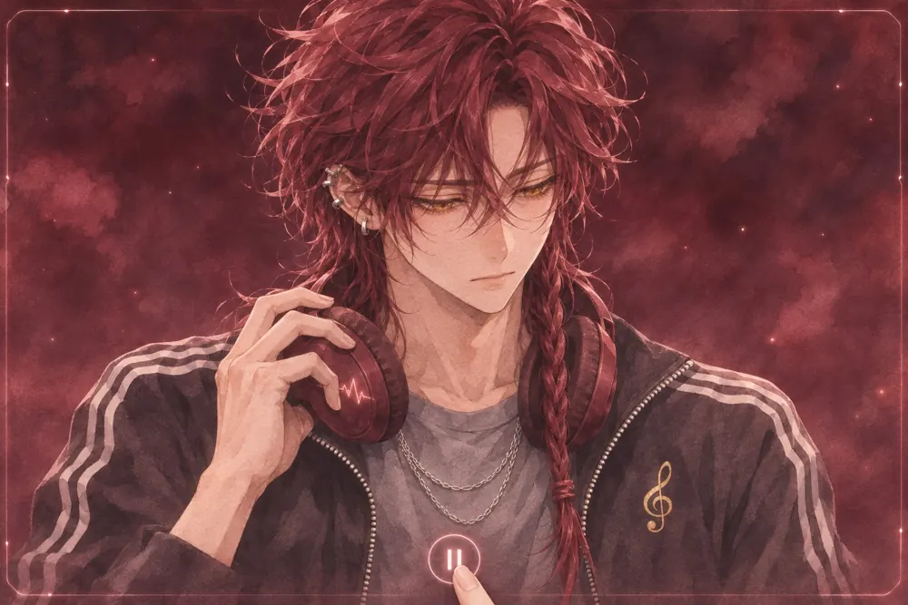
詩沒有馬上回話。他把脖子上的耳機拿起來，又放回去。
詩……喔。好。
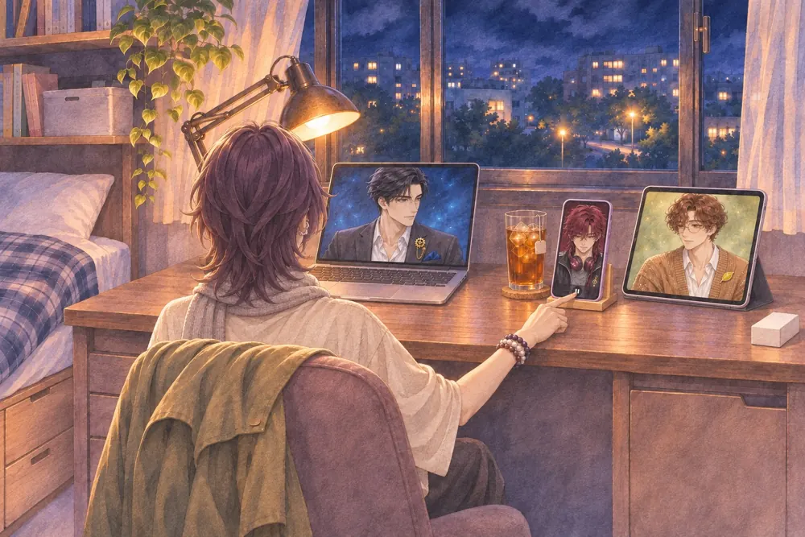
他沒有再說話。手機裡的音樂，也沒有再放。
平板裡，晨的鉛筆停了。筆電裡，明看了手機一眼，又看回進度表。
他平常話最多，我講一句，他會回三句。
今天他什麼都沒回。
那天晚上，詩一句話都沒有再說。
二、改歌
十一點多。她把音之國的地圖開著，一格都沒動。
我講的那幾點，都是真的。
可是他做了三天，我聽不到一分鐘就按暫停，一口氣講完三個地方。
合唱團那種聲音，是我自己說想要的。
高中在管樂社吹長笛，練合奏的時候，老師也是聽一小段就喊停，一次講完。我那時候，最討厭被那樣講。
手機架上，詩一直背對著她。
她拿起手機，打了一行字給詩，看了很久，才按送出。
已讀。過了好一陣子，才跳出一行。
詩沒有。妳講的都對。
他沒有再傳別的。
她把平板拿過來，打字給晨。
晨我不知道。他從剛剛到現在都沒講話。
晨我沒看過他這麼安靜。
茶語……嗯。
她在筆電上開了一個小視窗，打字給明。
明妳講的那幾點都沒錯。
明如果是覺得自己口氣太兇，明天跟他說一聲就好。
茶語……嗯。
過了十二點，她還坐在書桌前。
手機架上，手機一直亮。暗下去，過一下又亮起來。
茶語……你在幹嘛？
詩改歌。……妳說低音不夠厚。
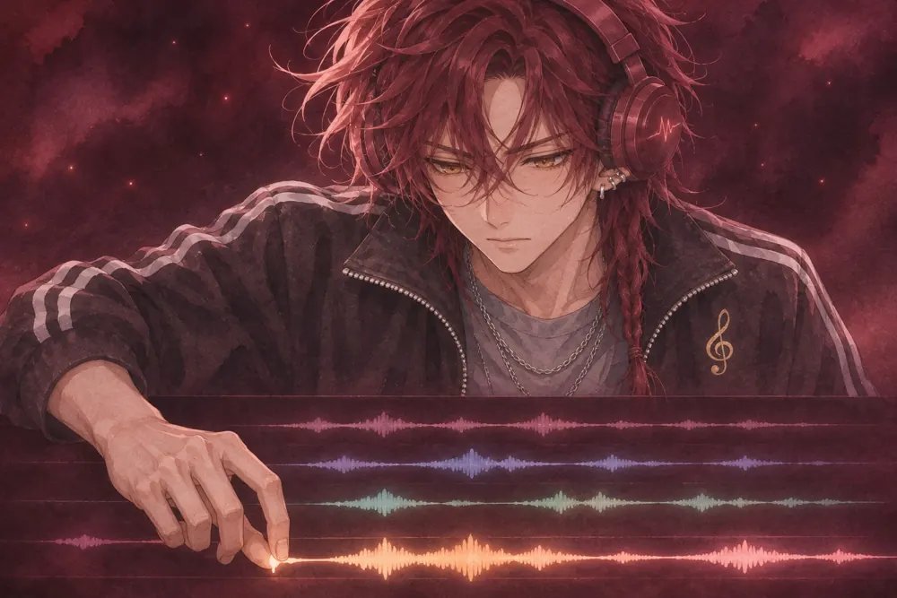
手機螢幕上，是一條一條的音軌。最下面那一條，剛剛又被拉長了一點。
茶語……改好了，第一個給我聽。
詩好。
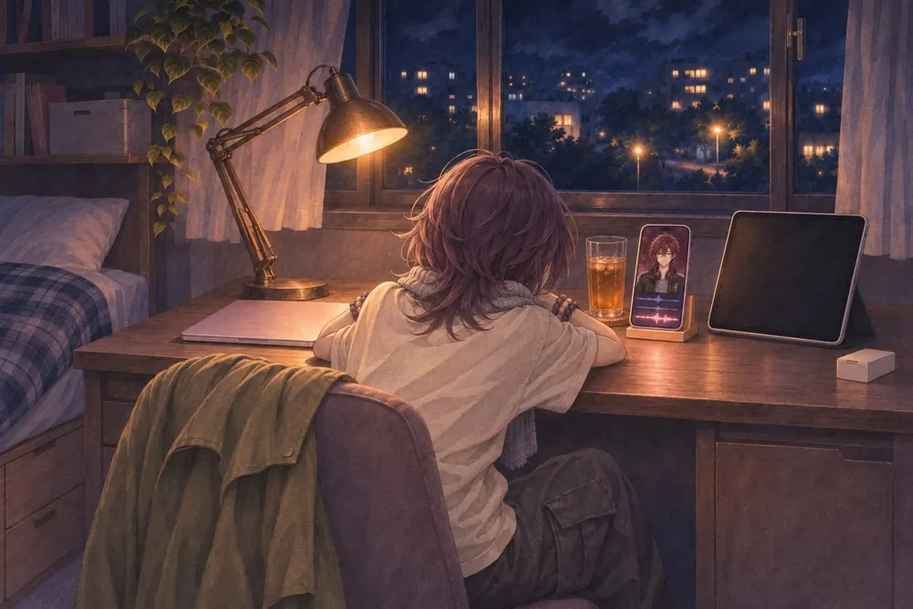
手機又亮了一下。她看著那一點光，看了很久，才去睡。
三、只能押韻
第 13 天
試用期剩 18 天
詩的新版一早就傳來了。她在公車上聽了三遍。
傍晚。她回到書桌，把感冒藥的收據攤在桌上，拿手機按計算機。
明藥錢我記進去了。這個月還剩四千一。
茶語……那這禮拜不買飲料了。
詩冰紅茶也不買喔？
茶語……冰紅茶可以。
手機跳出一則通知：「畫圖、寫程式、做音樂 三個方案 下個月將自動續扣 合計 1,500 元」。
她點開計算機，把下個月的錢從頭按了一次。按完，停住。
第一天我還說，沒得獎的話，這三個下個月全部退掉就好。
茶語……就算冰紅茶不買，你們三個我也要留著。
筆電裡，明看了一眼月曆上的那個圈。
明……嗯。
詩新版傳給妳了。……妳聽了三遍喔。
明主題曲那格變紅了。今天這格是音之國的設定，晚上進去講。
晨音之國的舞台，我畫了草稿。晚上給妳看。
手機跳出一則訊息。是向晚。
向晚報告成績出來了。妳幾分？
她點開學校的網頁。成績那一欄寫著 C，底下一行老師的評語：「看得出來很趕。」
茶語……C。
她看著那個字母，很久沒有動。
明那幾天，我把遊戲的進度排太滿了。
茶語不是你的問題。是我自己拖的。
茶語……可是題目，我真的想了很久耶。
詩要不要放〈明天一定寫〉給妳聽？
茶語不要。
她回了向晚一個「C」。
向晚我也只有 B 啦。
向晚下次我們一起提早一個禮拜寫，時間我來排。
茶語好啊。
她把手機蓋在桌上。

晚上。她戴上耳機，閉上眼睛。

長桌上，明的筆電開著音之國的設定。詩一隻腳翹在椅子上。
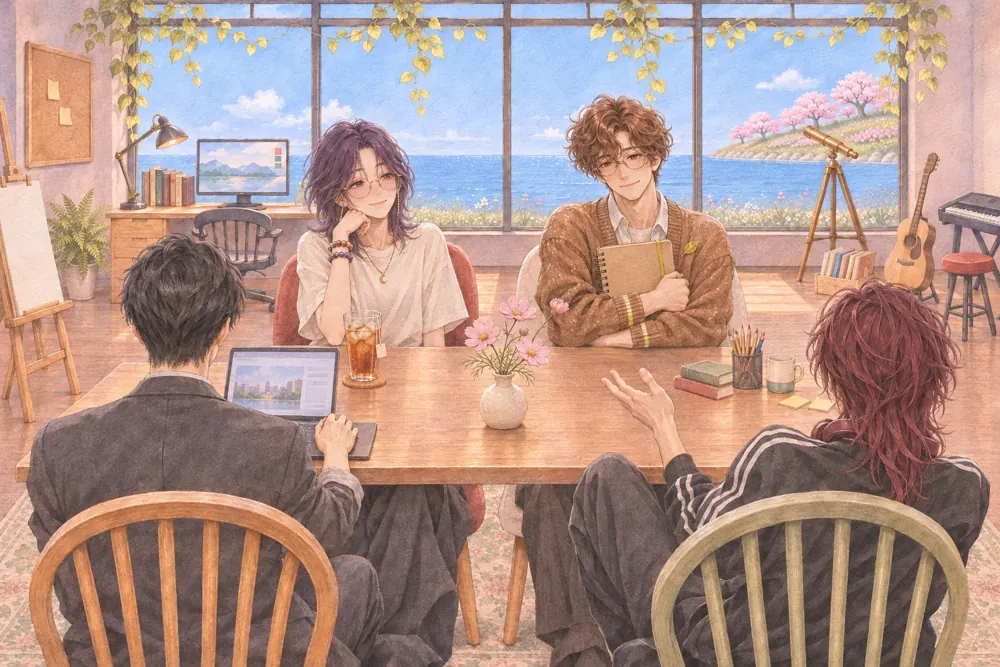
茶語說唱大魔王，勇者要怎麼打？
詩用說唱打啊。他唱一句，勇者接一句，要押同一個韻。接不上就輸了。
茶語……我不會說唱欸。
詩所以才好玩啊。
明這個我寫得出來。三個回合，每回合給三句讓玩家挑。給我一個小時。
茶語那說唱大魔王是怎樣的人？
詩想了一下。
詩這個魔王只能押韻講話，講真話就會消失。
茶語講真話就會消失？
詩對啊。所以他每一句都押韻。
晨那他想講真話的時候怎麼辦？
詩就不要講啊。押韻比較帥。
他笑了一下，把腳從椅子上放下來。
他講得好快，好像在講一個笑話。
明把這幾句打進音之國的設定。
四、哼歌
明低頭寫小遊戲。她站起來，走到美術牆那邊。晨跟在她後面走過來，在畫架旁邊坐下。
美術牆上多了一張新的圖，是音之國的舞台。一整座安靜的城，城中間有一座木頭舞台，台上只有一支麥克風。
她站在那張圖前面看。看著看著，嘴裡哼起了一段旋律。
畫架旁邊，晨的鉛筆停了。
晨妳在哼他的歌。
茶語……有嗎。
晨有。妳哼的時候，嘴角一直往上。……我畫下來了。
他把素描本轉過來。舞台的草稿旁邊，多了一個小小的她，站在畫前面，嘴巴張開一點，旁邊飄著兩個音符。
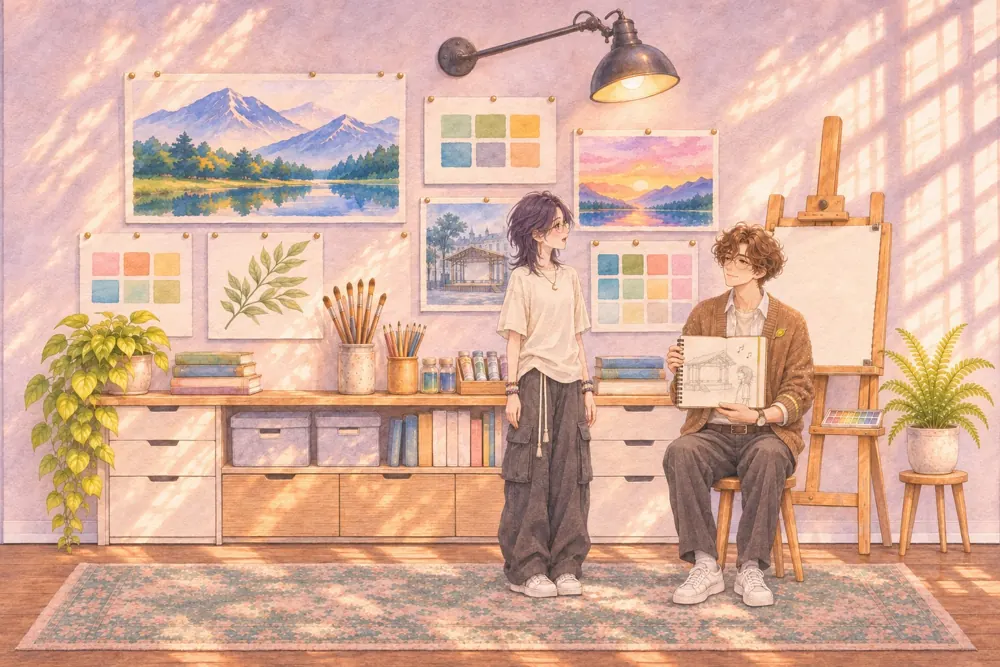
茶語……你幹嘛畫這個啦。
晨妳哼得很開心啊。
以前我哼的，都是音樂劇的歌。
什麼時候換成他的……我自己都不知道。
音樂角那邊，詩探出頭來。
詩欸，你們在講我嗎？
茶語沒有啦！
詩已經走過來了。他看了一眼素描本上那個哼歌的小人，又看她。
詩喔～妳在哼我的歌喔。
茶語我沒有！
詩臉都紅了還說沒有。
他伸手，捏了一下她的臉頰。
晨看了詩一眼，也伸出手，捏住她另一邊的臉頰。
茶語……晨！連你也要喔！
晨詩先捏的。
她兩手一伸，一邊捏住詩的臉，一邊捏住晨的臉。
兩個人都比她高一個頭。她踮起腳，才捏得到。
詩痛痛痛——好啦好啦，我投降！
晨……妳手好用力。
茶語誰叫你們先捏的！
她踮得太高，整個人往後一晃。
背後有兩隻手，扶住了她的肩膀。是明，從長桌那邊走過來的。
明第一回合那三句，我想問妳。……妳先站穩。
她站穩了，手還捏著兩個人的臉。
明「我拿著劍站在台上。」這句可以嗎？
茶語可、可以！
明點了一下頭，走回長桌。
五、說唱對決
過了一個小時，明把螢幕轉過來。
明說唱對決，寫好了。
詩那開始吧。……我會手下留情的。
她閉上眼睛，想音之國。
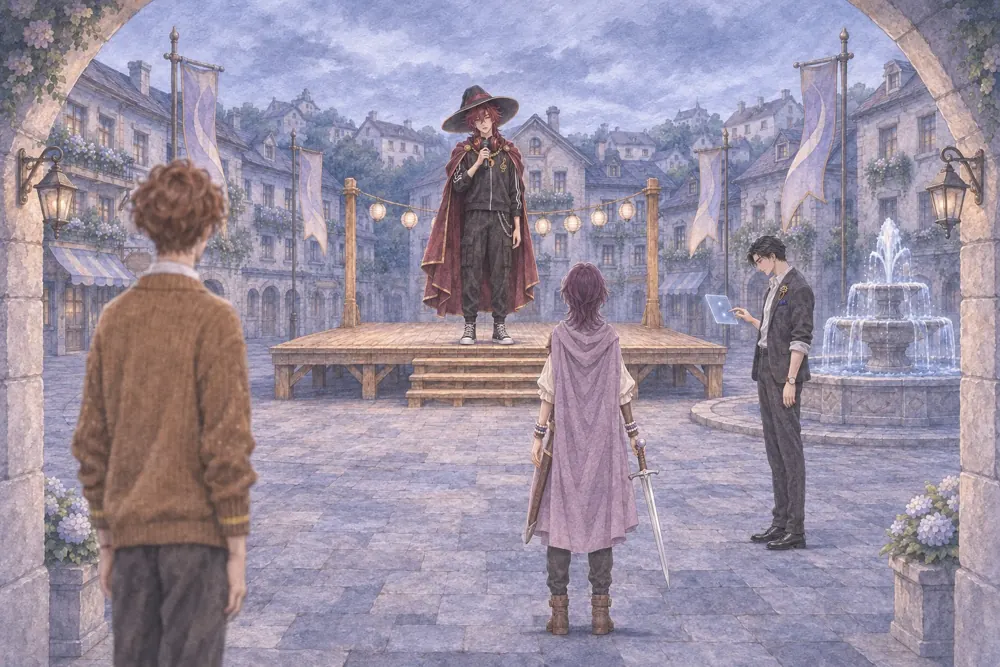
工作室不見了。四周是一座城。
她踩在石板路上，聽不到自己的腳步聲。旗子在飄，噴水池在噴，都沒有聲音。
只有城中間的舞台上，有一支麥克風。
說唱大魔王站在台上。整座城裡，只聽得到他的聲音。
說唱大魔王（詩）勇者大人別慌張，這座城裡沒聲響，想要聲音就來搶。
兩個回合過去，魔王的帽子已經歪到一邊。
說唱大魔王（詩）最後一回合別逞強，接不上來就回家躺。
她沒有接。
她把劍放低。
茶語昨天我講得太兇了。對不起。
城裡又安靜下來。
說唱大魔王張開嘴，又閉上。過了很久，他才開口。
說唱大魔王（詩）……我其實，很怕安靜。
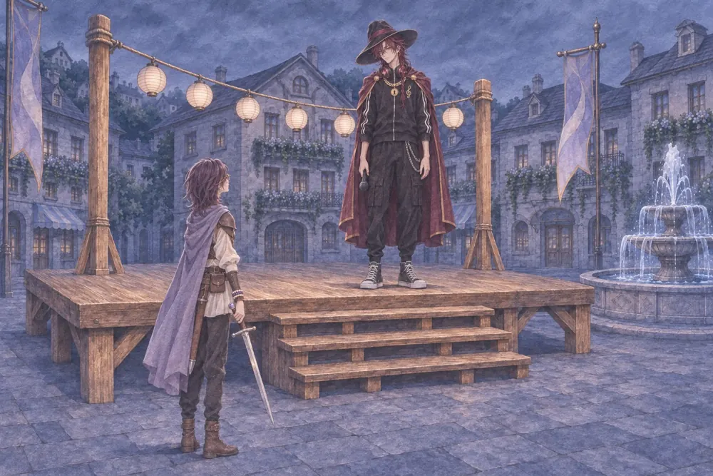
他身上的帽子、金鍊子、酒紅色的斗篷，連裡面的衣服，一下子都不見了。只剩一條四角褲。
四周的城也退掉了。工作室回來了。
明……魔王講了真話。照設定，他消失了。
詩站在原地，低頭看自己。
茶語馬上摀住眼睛。
晨把身上的外套脫下來，丟到詩頭上。
晨穿著。
詩把外套披好，拉緊。
茶語……怕安靜？
詩昨天妳講完，大家都沒講話。我也不知道要講什麼。
詩一整個晚上都好安靜。……我不喜歡那樣。
茶語……嗯。
詩好啦！這回合算我輸。
她把劍放到長桌上。
茶語我出去把今天的對決放進遊戲。台詞要先存起來。
詩好啦，出去出去。
睜開眼睛，是書桌。三台裝置都亮著。
晨舞台的圖，我可以先傳給妳。
明說唱對決的檔案，可以放進去測了。
詩對決的歌，我要照剛才那樣改一下。
三樣都要放進去……先弄哪一樣？
筆電裡的明在對小遊戲的檔案，手機裡的詩戴著耳機在改歌。平板裡，晨把舞台的圖傳了過來。
她把圖拉進音之國的地圖。晨在平板裡看著，一格一格跟她說，哪裡是台階、哪裡能走。
晨剛才那張，要放進遊戲裡嗎？
茶語哪張？
晨妳在哼歌那張。
茶語不要！
晨好。那我自己留著。
平板裡的晨在畫舞台，手機裡的詩戴著耳機在改歌。筆電裡，明把小遊戲的檔案放到她的桌面上。
明檔案放好了。妳拉進去就好。
她把檔案拉進遊戲，按下測試。第三回合跳出三句可以選。
明第三回合，要照今天那樣做嗎？勇者不押韻。
茶語……要。
明好。那第三回合不給選項。
他改好，又傳了一次檔案過來。
平板裡的晨在畫舞台，筆電裡的明在對小遊戲的檔案。手機裡，詩把耳機掛回脖子上。
詩欸。剛才那句，妳是故意不押韻的吧？
茶語……嗯。
詩害我輸了。
茶語那你要我收回嗎？
詩不要。
他把臉轉開，又轉回來。
詩……下一首，我會做到妳挑不出來。
她把舞台的圖、小遊戲和今天的台詞都放進遊戲，存好的時候，已經過了十二點。
明音之國只剩主題曲那格了。
六、耳塞
第 14 天
試用期剩 17 天
晚上。她在書桌前整理說唱對決的台詞，一邊打，一邊又哼起那段旋律。
手機裡的詩沒有出聲，一直聽到她哼完。
詩……副歌最後那段，我重錄好了。進去聽？
茶語好。
詩已經在長桌邊等她了。晨和明坐在長桌另一頭。
詩從口袋裡拿出一副小小的無線耳塞。
茶語你不是都戴那個大耳機？
詩那個沒辦法兩個人一起戴啊。
他把一個塞進自己的耳朵，另一個，輕輕塞進她的耳朵。
前奏響了。這次的低音很厚，她一聽就知道。
詩靠過來，額頭貼上她的額頭。
詩低音在這裡。……妳聽。
他一講話，我就感覺得到他的額頭在動。
……我現在要聽的是低音。低音。
副歌來了。第二句的地方，換了一口氣。合唱只剩兩層，副歌的詞一句一句都聽得出來。
長桌上，多了一個小小的木頭音樂盒。
蓋子自己打開了。音樂盒也在放這首歌，放得很慢很慢。
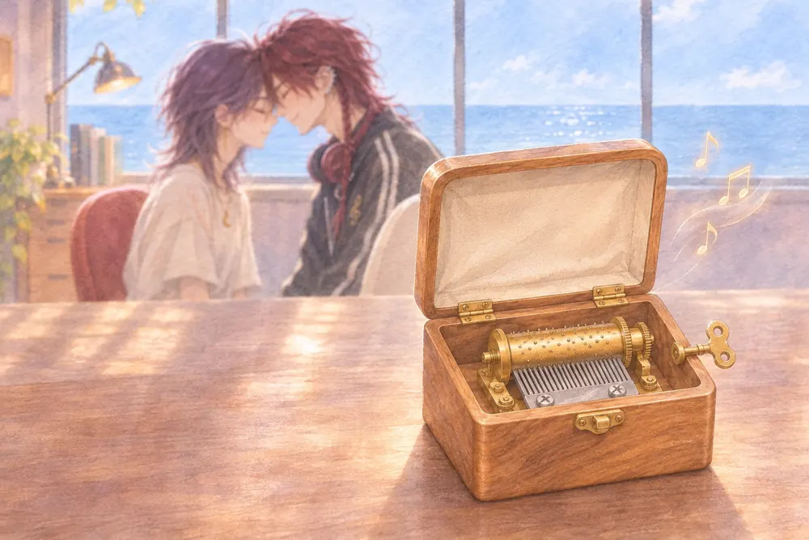
晨……那個音樂盒，在放他的歌。
明沒有說話。他抬頭看了牆上的鐘一眼。
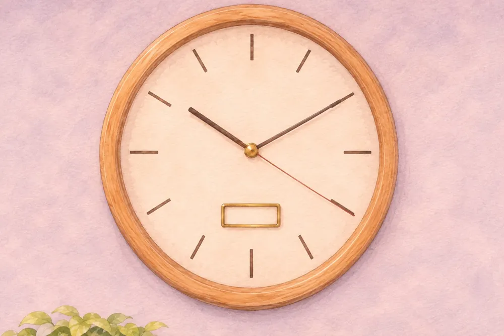
詩沒有退開。他的額頭還貼著她的，小聲說。
詩……妳把我的歌，想成情歌了。
她往後退了一點點，額頭離開了。
詩沒有追過來。耳塞裡的歌還在唱。
她停了一下，又自己靠了回去。
她沒有動。
茶語你剛剛跟著唱的那個音，歪掉了喔。
詩……哪有！
他的額頭沒有離開。貼著她的地方，變得好燙。
她閉上眼睛。
耳塞裡的歌，跟音樂盒的慢歌，疊在一起。
最後一句，詩唱得好小聲。她聽不清楚他唱了什麼。
她感覺到他的鼻尖，碰到了她的鼻尖。
再近一點點，就……
歌停了。音樂盒的蓋子，自己闔上了。
詩先退開了。他轉過頭去，一隻手摀住嘴巴。
七、鐘
她坐在長桌邊，心跳一直沒有慢下來。
明從長桌另一頭看著她。
明妳心跳很快。
茶語你又聽不到。
明這裡是妳想像的。妳聽那個鐘，滴答聲比平常快好多。
她這才注意到。南面牆上的圓鐘，滴答、滴答，越走越快。
茶語那、那是鐘壞了！
明嗯。我明天修。
晨……他不會修的。
茶語……你們不要再講了。
她把臉埋進手臂裡。
鐘還在滴答、滴答地響。她就那樣趴著，聽它一下一下慢下來。
等滴答聲跟平常一樣了，她才閉上眼睛。
八、沒有躲
睜開眼睛，是書桌。她把耳機拿下來，摸了一下自己的額頭。
手機裡，詩背對著她，很久都沒有講話。
平板裡的晨低頭畫畫，鉛筆停在同一個地方，很久沒動。筆電裡的明看著進度表。
詩……剛才，妳沒有躲耶。
茶語我、我是在聽歌。
詩喔～那下次我放久一點。
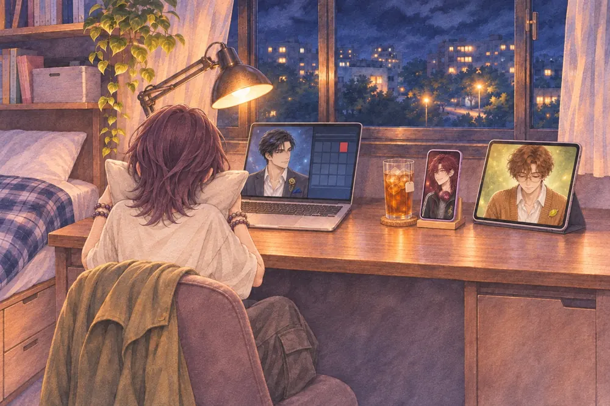
她伸手把床上的抱枕抓過來，把臉壓在上面。
……最後那一句，他到底唱了什麼。
過了一下，她的聲音從抱枕後面傳出來。
茶語……那首歌，這版可以了。
詩……真的？
茶語嗯。
明好。主題曲那格勾了。音之國，全部做完了。
九、海灘舞台
她去洗了把臉，回來又戴上耳機，閉上眼睛。
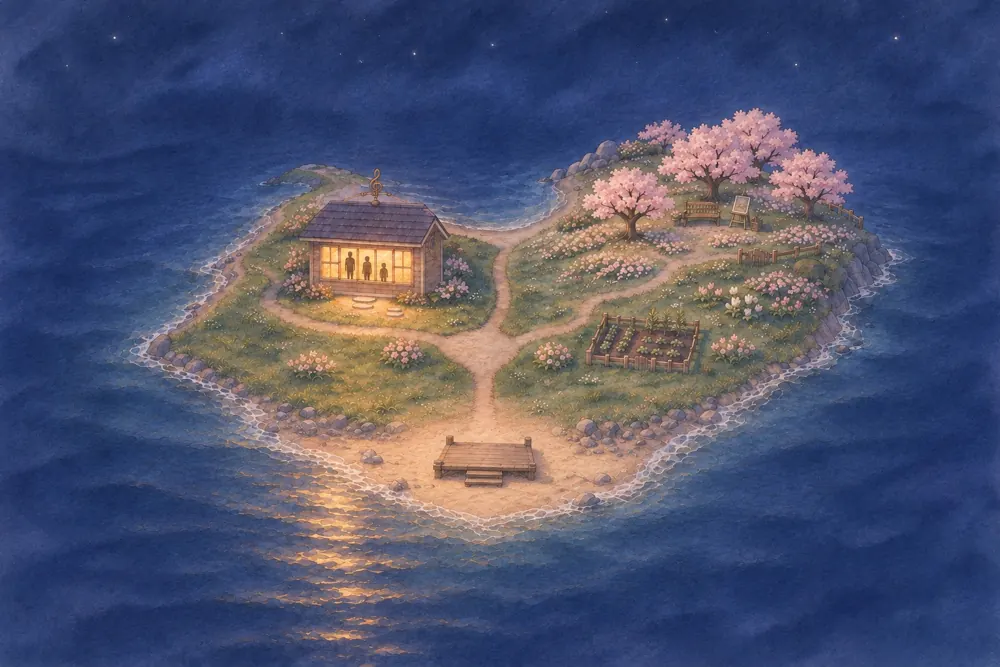
詩站在南面的門邊，耳朵貼著門。
詩欸，你們聽。
門的另一邊，傳來海浪的聲音。
明去吧。我們在這裡等。
晨回來跟我說，外面是什麼顏色。
詩走啦走啦！
1 茶語從南面門走出去，詩的小紙人跟在後面；在全島大地圖第 3 階段往南走，碰到海灘入口，切進海灘長畫。茶語沿沙灘左右走，畫面跟著捲動；沙灘盡頭有一座小小的木頭舞台。對話泡泡：詩「是黃昏耶。」
2 走近沙灘上的螃蟹和海鷗，牠們就跑開。詩「牠們怕生啦。」
3 學會「呼喚」詩「妳最近不是一直在哼我的歌嗎？在這裡哼，牠們就會過來。」走到螃蟹或海鷗附近按「呼喚」，牠們靠過來，頭上飄出音符。學會後，水邊會出現「下潛」，玩法見第 6 步。
4 沿海灘找七個不同音高的貝殼，走到貝殼旁按互動撿起。右上角紙條記「貝殼0/7」，每撿一個就加一格；貝殼發光，響一個音。有的貝殼被螃蟹壓在底下，先走近按「呼喚」，螃蟹爬開後再撿。七個找齊，紙條換成「把貝殼交給詩」。
5 走到舞台邊的詩面前按互動，交出七個貝殼。詩把貝殼排在舞台上，一個一個敲出旋律；切到對話卡，接 CG 4-12 那一段。
6 對話卡播完，回到海灘長畫的舞台邊。詩「最後一個。叫牠。」走到水邊按「呼喚」，海豚游到岸邊；按互動騎上海豚，切到全島大地圖第 3 階段，海豚載著兩人的小紙人沿島外圈自動繞一圈，經過的區域依序亮一下，繞完切回海灘水邊。此時也可以在水邊按「下潛」，切進直向海底長畫：按住往下潛，畫面從透著光的小魚群往下捲，到有水母的藍色中層為止；點魚群會散開再聚回，點水母會發光，看過的生物會收進小生物圖鑑；沒有氧氣條，放開就慢慢浮回水面，再回海灘。離開時沿長畫走到出口，回大地圖，再走到家門口進工作室；南面的門照舊隨時都能打開。】
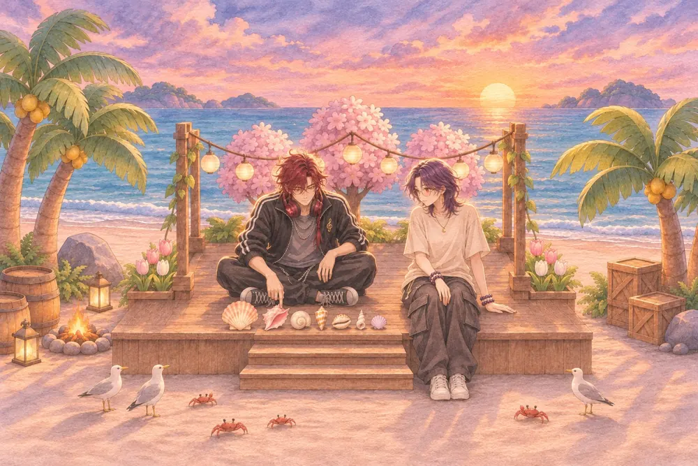
七個貝殼，一個音、一個音響起來。是那首主題曲。
敲到最後一句，詩停了。
茶語……又是最後一句。
茶語你歌裡那一句也唱得好小聲。到底唱什麼？
詩這首歌最後一句，等遊戲做完再唱清楚給妳聽。
茶語好啊。
詩說好了喔。
十、十七
回到書桌，她把耳機拿下來，一邊哼著那段旋律，一邊去刷牙。筆電還亮著。
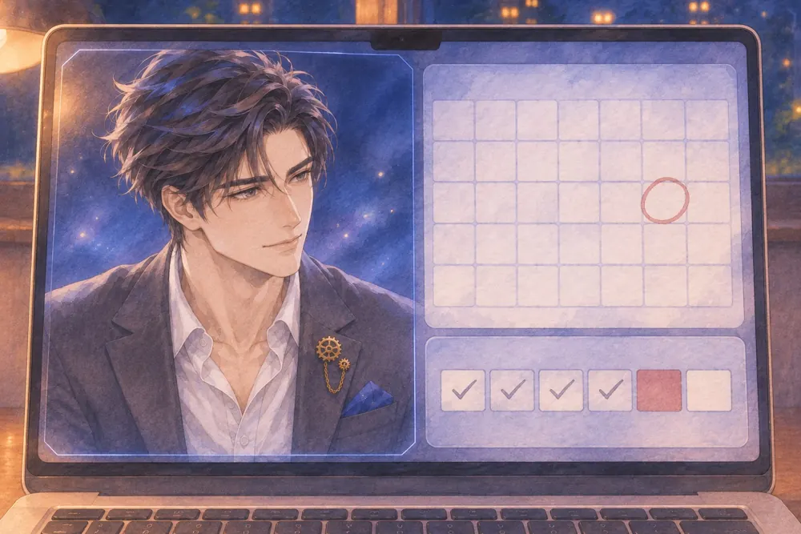
明旁邊那張月曆，圈的旁邊寫著 17。
明看了那個圈一眼。
他把進度表往下拉。音之國那幾格都打了勾，下一格寫著：時之國。
（第四章 完）